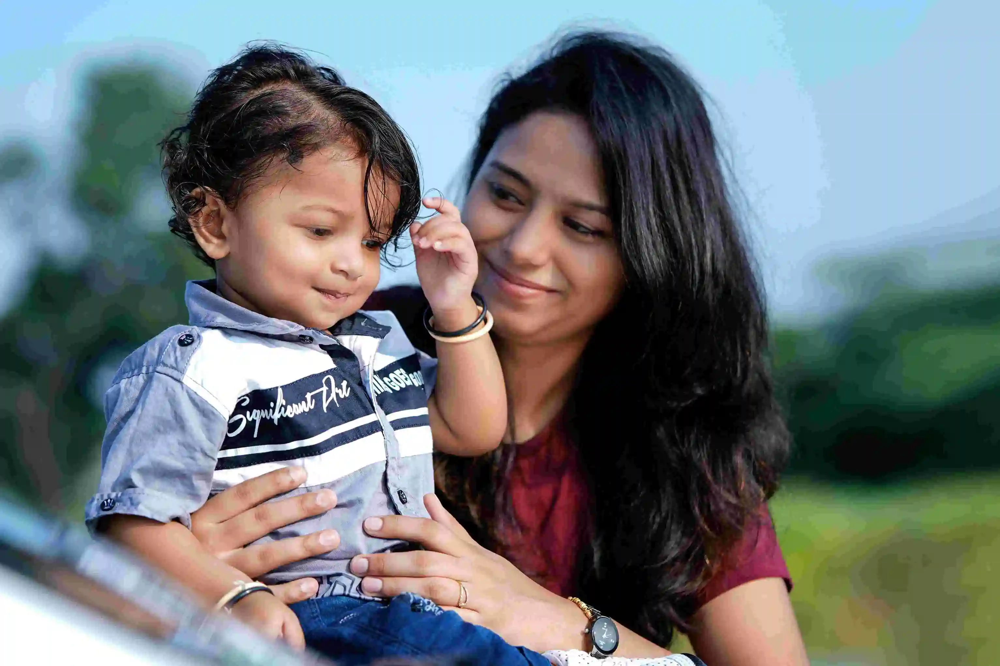
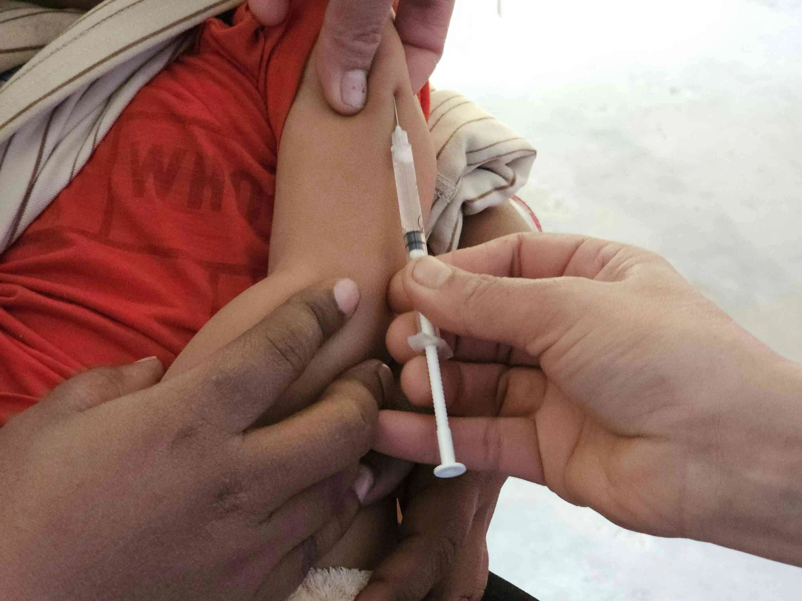

Child Vaccination Schedule (Birth to 5 Years) — Complete Guide

Introduction
A proper child vaccination schedule is one of the most important steps parents can take to protect their children from dangerous, preventable diseases. From the moment of birth through the first 5 years of life, timely baby vaccines help build a strong immune system and guard against serious infections. At Gani Hospital, Ramanathapuram, we provide complete paediatric vaccination services following the Indian Academy of Pediatrics (IAP) and National Immunization Schedule (NIS) guidelines.
Newborn babies have developing immune systems that are vulnerable to infections. Timely immunization trains the body to recognize and fight harmful viruses and bacteria before they cause life-threatening illness. This guide covers the complete vaccination schedule for children from birth to 5 years, including vaccine benefits, side effects, and essential tips for parents.
For expert guidance and paediatric healthcare services in Ramanathapuram, trust Gani Hospital — your child's health is our priority.
Why Is the Child Vaccination Schedule Important?
Vaccines are among the most effective tools in modern medicine. Following the recommended immunization chart for children provides protection at the exact age when children are most vulnerable to infections.
- Protects children from serious and life-threatening diseases like polio, tuberculosis, and measles
- Builds a stronger, trained immune system naturally and safely
- Prevents the spread of infectious diseases in schools and communities
- Reduces the risk of hospitalisation and emergency treatment
- Supports healthy physical and cognitive development
- Protects elderly grandparents and family members through herd immunity
- Satisfies school admission requirements in many institutions across Tamil Nadu
- Reduces long-term medical expenses from preventable illnesses

Complete Child Vaccination Schedule — 0 to 5 Years
The following vaccination chart for children is based on the Indian Academy of Pediatrics (IAP) guidelines. Consult your paediatrician at Gani Hospital for personalized scheduling.
| Age | Vaccines | Disease Protected Against |
|---|---|---|
| At Birth | BCG, OPV-0, Hepatitis B | Tuberculosis, Polio, Liver infection |
| 6 Weeks | DTP, IPV, Hib, Rotavirus, PCV | Diphtheria, Tetanus, Pertussis, Polio, Meningitis, Diarrhoea, Pneumonia |
| 10 Weeks | DTP, IPV, Hib, Rotavirus (2nd doses) | Same as above — booster protection |
| 14 Weeks | DTP, IPV, Hib, Rotavirus, PCV (3rd doses) | Same as above — full primary series |
| 6 Months | Hepatitis B (completion dose), Influenza | Liver disease, Seasonal flu |
| 9–12 Months | MMR, Typhoid (if advised) | Measles, Mumps, Rubella, Typhoid fever |
| 12–18 Months | MMR booster, Chickenpox, Hepatitis A, DTP booster | Measles, Varicella, Hepatitis A, Diphtheria |
| 4–5 Years | DTP booster, OPV/IPV, MMR booster | Final booster — pre-school protection |
Note: Vaccine schedules may vary based on the child's health condition, doctor's advice, and updated national guidelines. Always consult your paediatrician at Gani Hospital, Ramanathapuram for a personalized immunization plan.

Benefits of Following a Timely Vaccination Schedule
Following the correct child vaccination schedule is not just about preventing illness — it ensures that vaccines deliver maximum protection at the right developmental stage.
- Stronger early immunity — vaccines work best when given at the recommended age
- Lower risk of severe complications — early protection reduces disease severity
- Better protection before school admission — many schools require a complete immunization card
- Reduced chance of missing critical doses — staying on schedule prevents protection gaps
- Lower medical expenses — prevention is far more cost-effective than treatment
- Peace of mind for parents — knowing your child is protected at every stage
To book a vaccination appointment at Gani Hospital, our team is ready to guide you through every step of your child's immunization journey.
Common Side Effects After Vaccination (Normal & Temporary)
Most baby vaccines are safe and well-tolerated. Mild side effects are a sign that the body is responding and building immunity — they are temporary and usually resolve quickly.
Common Mild Reactions
- Mild fever — usually below 101°F; give paracetamol as advised
- Pain, redness or swelling at the injection site — apply a cool damp cloth
- Temporary irritability or fussiness — comfort the child with feeding and rest
- Reduced appetite — offer fluids frequently
- Mild sleepiness or tiredness — normal and resolves within a day
- Mild rash — may appear after MMR or chickenpox vaccines; fades on its own
These effects typically disappear within 24–48 hours. If symptoms persist beyond this, contact your doctor immediately.
When to Seek Immediate Medical Attention After Vaccination
While serious reactions are rare, parents must recognize warning signs after vaccination that require immediate medical care at Gani Hospital, Ramanathapuram:
- High fever above 102°F (39°C) — especially if persistent
- Difficulty breathing or wheezing
- Severe allergic reaction (anaphylaxis) — hives, swelling of face or throat
- Continuous crying for more than 3 hours
- Seizures or unusual body movements
- Extreme weakness, limpness, or dehydration
- Swelling larger than 5 cm around the injection site
Gani Hospital provides 24/7 emergency paediatric care in Ramanathapuram. Do not hesitate — seek help immediately if you notice any of these symptoms.
Tips for Parents Before and After Vaccination
Before Vaccination
- Carry your child's previous vaccination records and immunization card
- Dress the child in comfortable, loose-fitting clothes for easy access to the injection site
- Feed your baby normally unless specifically advised otherwise by the doctor
- Inform the doctor about any fever, allergies, or recent illness
- Stay calm — children sense anxiety and may become more distressed
After Vaccination
- Stay at the hospital for 15–30 minutes for post-vaccination observation
- Apply a cool compress to the injection site if swollen
- Give paracetamol as directed by your doctor for fever or pain
- Keep your child well hydrated — offer frequent feeds or fluids
- Note the next due date before leaving and set a reminder
- Avoid bathing the injection site area on the same day
What to Do If You Missed a Vaccine Dose
Missing a scheduled baby vaccine does not mean starting all over. A catch-up vaccination plan can be designed by your paediatrician to fill the gaps and restore protection as quickly as possible.
- Do not wait — book an appointment as soon as possible
- Bring your child's immunization card to identify which doses were missed
- Follow the doctor's customized catch-up schedule
- Never give vaccines at home without medical supervision
Contact Gani Hospital, Ramanathapuram to schedule a catch-up vaccination appointment with our paediatric team today.
Related Paediatric and Child Health Services at Gani Hospital
Gani Hospital, Ramanathapuram offers a wide range of child and family health services beyond vaccination. Explore our services:
- All Medical Services at Gani Hospital — comprehensive healthcare for children and families
- Book a Paediatric Appointment — schedule your child's next vaccination or checkup
- Contact Gani Hospital Ramanathapuram — reach our team for queries and emergencies
- Read more health blogs — expert tips for parents and families
Expert Child Vaccination Services at Gani Hospital, Ramanathapuram
For trusted, safe, and complete paediatric vaccination in Ramanathapuram, Gani Hospital is the preferred choice for families across the region. Our experienced team ensures every child receives the right vaccine at the right time in a safe and child-friendly environment.
Why Parents Choose Gani Hospital for Child Vaccination
- Experienced paediatricians following IAP and WHO guidelines
- WHO-approved, certified vaccines stored at correct temperature
- Safe, hygienic administration by trained nursing staff
- Child-friendly, comfortable care environment
- Vaccination reminders and scheduling support for next doses
- Parental counselling and growth monitoring at every visit
- 24/7 emergency paediatric support for post-vaccination concerns
Keep your child's immunization chart updated and never miss a booster dose. Regular paediatric checkups at Gani Hospital ensure complete protection at every stage of your child's development.
Protect Your Child with Timely Vaccination at Gani Hospital, Ramanathapuram
Schedule your child's vaccination today — our paediatric team is here to guide you every step of the way.
Book Vaccination Appointment →Trusted Medical References
- WHO – Vaccines and Immunization
- CDC – Child Immunization Schedule
- NHS – Vaccination Schedule for Children
Frequently Asked Questions About Child Vaccination
Is vaccination mandatory for children in India?
Vaccination is strongly recommended under India's National Immunization Schedule (NIS). While not legally mandatory, many schools in Tamil Nadu require a complete immunization card for admission.
Can vaccines be delayed or skipped?
Delays are not recommended. Missing doses leaves children vulnerable to serious infections. If a dose is missed, consult our paediatricians at Gani Hospital, Ramanathapuram for a catch-up vaccination plan.
Are vaccines safe for children?
Yes, all baby vaccines provided at Gani Hospital are WHO-approved and rigorously tested for safety. Mild, temporary side effects may occur but are a sign that immunity is being built.
Do all children need the same vaccines?
Most children follow the standard child vaccination schedule, but paediatricians may customize doses based on health conditions, travel history, or previous vaccinations.
What if I missed a dose of my child's vaccination?
Consult your doctor immediately for a catch-up vaccination schedule. Bring your child's immunization card to the appointment. Contact Gani Hospital to schedule a visit.